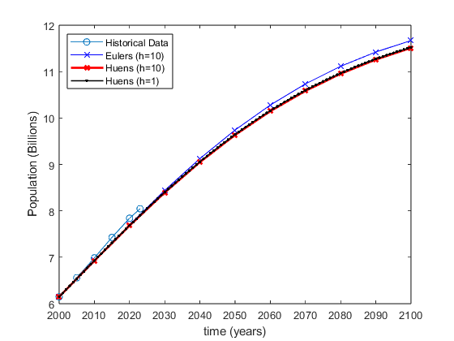

t = [2000 2005 2010 2015 2020 2023];
P = [6.148 6.558 6.986 7.427 7.841 8.045];
e10 = eulers(P(1), 10);
h10 = huens(P(1), 10);
h1 = huens(P(1), 1);
plot(t,P,'o-');
hold on;
plot(2000:10:2100,e10,'bx-');
plot(2000:10:2100,h10,'rx-',linewidth=2);
plot(2000:1:2100,h1,'k.-',linewidth=1.1,markersize=8);
legend('Historical Data','Eulers (h=10)','Huens (h=10)','Huens (h=1)','Location','northwest');
xlabel('time (years)');
ylabel('Population (Billions)')
function yo = eulers(yi, h)
yo(1) = yi;
for n = 2:1:100/h+1
yo(n) = yi + dP(yi)*h;
yi = yo(n);
end
end
function yo = huens(y1, h)
yo(1) = y1;
for n = 2:1:100/h+1
d1 = dP(y1);
y2 = y1 +d1*h;
yo(n) = y1 + (d1+dP(y2))*h/2;
y1 = yo(n);
end
end
function f = dP(P)
k = 0.002;
N = 12.5;
f = k.*P.*(N-P);
end
